Mondstadt
Arconte - Venti

Ele é um bardo de espírito livre e amante do vinho de Mondstadt, o que contradiz sua identidade como Barbatos, o Arconte Anemo.
Às vezes, canta poemas antigos e outras vezes canta canções novas que ninguém nunca ouviu falar.
Raridade:★★★★★ Elemento:Anemo Arma:Espada
Amber

Como a única Outrider remanescente dos Cavaleiros de Favonius , ela está sempre pronta para ajudar os cidadãos de Mondstadt — seja em algo simples ou em uma tarefa mais desafiadora.
Raridade:★★★★ Elemento:Pyro Arma:Arco
Kaeya

Kaeya é o Capitão da Cavalaria dos Cavaleiros de Favonius . Ele é muito respeitado pelo povo de Mondstadt — mesmo com todas as suas excentricidades e segredos.
Raridade:★★★★ Elemento:Cryo Arma:Espada
Jean

Irmã mais velha de Barbara e descendente do prestigiado Clã Gunnhildr , Jean é a Grã-Mestra interina dos Cavaleiros de Favonius. Ela está sempre ocupada lidando com a agitação em Mondstadt e trabalhando incansavelmente para manter a Cidade da Liberdade.
Raridade:★★★★★ Elemento:Anemo Arma:Espada
Barbara

Ela é a diaconisa da Igreja de Favonius e um "ídolo" proeminente, após ter aprendido sobre ela com a intrépida aventureira Alice. Ela também é a irmã mais nova do Grão-Mestre Interino Jean.
Raridade:★★★★ Elemento:Hydro Arma:Catalisador
Lisa
Lisa, uma poderosa maga reconhecida como a graduada mais distinta da Academia Sumeru em 200 anos, retornou a Mondstadt para se tornar a humilde Bibliotecária dos Cavaleiros de Favonius.
Raridade:★★★★ Elemento:Electro Arma:Catalisador
Diluc

Nascido no abastado Clã Ragnvindr , Diluc é o atual proprietário da Vinícola Aurora e um nobre de grande prestígio em Mondstadt . Embora um incidente passado o tenha levado a romper com os Cavaleiros de Favonius , ele continua a proteger Mondstadt à sua maneira.
Raridade:★★★★★ Elemento:Pyro Arma:Espadão
Razor

Abandonado ainda bebê, Razor foi acolhido pelo Lobo do Norte de Boreas e criado por sua alcateia em Wolvendom . Após um encontro fortuito com Varka , o atual Grão-Mestre dos Cavaleiros de Favonius , ele começou lentamente a se reintegrar aos humanos com a ajuda de sua mestra Lisa.
Raridade:★★★★ Elemento:Electro Arma:Espadão
Klee

Filha da intrépida e muitas vezes bastante destrutiva aventureira Alice, Klee puxou muito à mãe em vários aspectos, para grande desgosto dos Cavaleiros de Favonius a quem foi confiada.
Raridade:★★★★★ Elemento:Pyro Arma:Catalisador
Bennet

Órfão, descoberto por um aventureiro idoso em Mare Jivari quando bebê, Bennett foi criado longe de sua nação natal, Natlan, na Guilda dos Aventureiros de Mondstadt. Ele é o único membro da "Equipe de Aventuras do Benny", já que todos os outros abandonaram o grupo após vivenciarem o constante infortúnio que o persegue.
Raridade:★★★★ Elemento:Pyro Arma:Espada
Noelle

Extremamente forte e confiável, Noelle é considerada "a criada de todas as criadas" entre os Cavaleiros de Favonius , sendo que muitos acreditam que ela tem a capacidade de estar em todos os lugares ao mesmo tempo. Ela é teimosa, no entanto, e disposta a colocar sua vida em risco desnecessariamente a qualquer momento para ajudar alguém. Ela tentou muitas vezes se juntar às fileiras dos Cavaleiros de Favonius para realizar seu sonho de se tornar uma cavaleira de pleno direito, mas falhou em todas as tentativas até agora.
Raridade:★★★★ Elemento:Geo Arma:Espadão
Fischl

Ela é uma investigadora da Guilda dos Aventureiros de Mondstadt, acompanhada pelo corvo noturno Oz. Uma aventureira ousada com teorias aparentemente extravagantes que por acaso se revelam verdadeiras, ela afirma vir de um mundo além de Teyvat.
Raridade:★★★★ Elemento:Electro Arma:Arco
Sucrose

Uma alquimista com uma curiosidade insaciável em relação ao mundo e tudo nele. Ligada aos cavalheiros de Favonius como assistente de Albedo, sua área de foco é a "bio-alquimia". Ela se esforça para enriquecer o mundo, transformando os seres vivos com o poder da alquimia.
Raridade:★★★★ Elemento:Anemo Arma:Catalisador
Mona

Astróloga de grande conhecimento e orgulho, Mona se estabeleceu em Mondstadt para evitar a ira de seu mestre após ler, sem querer, o diário deste.
Raridade:★★★★★ Elemento:Hydro Arma:Catalisador
Diona

Apesar de ser bartender no Cat's Tail , ela detesta álcool e fará de tudo para arruinar a indústria vinícola de Mondstadt — uma tarefa mais fácil de dizer do que fazer, visto que seus clientes adoram seus drinques. Ela é filha de Draff , um caçador de Springvale.
Raridade:★★★★ Elemento:Cryo Arma:Arco
Albedo

Humano sintético criado pela alquimista Rhinedottir, a misteriosa Albedo é a Alquimista Chefe e Capitã da Equipe de Investigação dos Cavaleiros de Favonius.
Raridade:★★★★★ Elemento:Geo Arma:Espada
Rosaria

A menos devota entre as freiras da Igreja de Favonius, Rosária prefere agir nas sombras a participar das atividades da Igreja.
Raridade:★★★★ Elemento:Cryo Arma:Lança
Eula

Embora descendente do infame e tirânico Clã Lawrence, Eula rompeu seus laços com o clã e tornou-se capitã da Companhia de Reconhecimento dos Cavaleiros de Favonius.
Raridade:★★★★★ Elemento:Cryo Arma:Espadão
Mika

Irmão mais novo de Huffman e topógrafo da linha de frente da Companhia de Reconhecimento dos Cavaleiros de Favonius, liderada por Eula, Mika cumpre diligentemente todas as suas tarefas com eficiência e sonha em se tornar um cartógrafo especialista no futuro.
Raridade:★★★★ Elemento:Cryo Arma:Lança
Dahlia

Dahlia é um diácono da Igreja de Favonius . Além disso, ele serve como Arauto de Barbatos e está ciente da identidade de Venti como tal, informando-o sobre quaisquer eventos notáveis na nação e transmitindo seu feedback ao povo de Mondstadt.
Raridade:★★★★ Elemento:Hydro Arma:Espada
Durin

Um dragão criado pela bruxa Hexenzirkel Andersdotter no mundo de conto de fadas de Simulanka , inicialmente comparado ao Durin original numa tentativa de escrever um novo final para a história original. Através da Arte de Khemia, Durin recebeu um corpo humano sintético de Albedo, que ele usou para se integrar à sociedade de Mondstadt.
Raridade:★★★★★ Elemento:Pyro Arma:Espada
Varka

O Grão-Mestre dos Cavaleiros de Favonius e atual Cavaleiro de Boreas, finalmente retornou à sua nação natal, Mondstadt. Alegre e muitas vezes despreocupado, mas ainda assim um líder e cavaleiro incrível.
Raridade:★★★★★ Elemento:Anemo Arma:Espadão
Nicole

Ela é um anjo sem voz e membro da Hexenzirkel , também conhecida pelo seu codinome "N".
Raridade:★★★★★ Elemento:Pyro Arma:Catalisador
Prune

Uma autoproclamada "Caçadora de Bruxas" viajou de Nod-Krai para Mondstadt em busca de Alice, depois que ela "sequestrou" seu amigo imaginário, Descartes. Lá, Prune conhece a filha de Alice, Klee, e espalha cartazes por toda Mondstadt difamando Alice, o que ninguém leva a sério.
Raridade:★★★★ Elemento:Anemo Arma:Catalisador
Lohen

Ele é o vice-capitão da Quinta Companhia dos Cavaleiros de Favonius . Embora não desconheça seus limites, Lohen ama e vive para a batalha, sempre pronto para enfrentar oponentes difíceis que coloquem suas habilidades de luta à prova.
Raridade:★★★★★ Elemento:Cryo Arma:Lança
Liyue
Arconte - Zhongli

Consultor da Funerária Wangsheng, ele é posteriormente revelado como o Arconte Geo , Morax, que decidiu experimentar o mundo sob a perspectiva de um mortal.
Raridade:★★★★★ Elemento:Geo Arma:Lança
Xiao

Ele é um adepti , sob o nome de Alatus ( chinês :金鹏 Jīnpéng ), e o único sobrevivente dos cinco principais Yakshas enviados por Morax para subjugar os espíritos demoníacos que assolavam Liyue. Atualmente, reside na Estalagem Wangshu e evita ao máximo grandes multidões e interações sociais.
Raridade:★★★★★ Elemento:Anemo Arma:Lança
Ningguang

Ningguang , a Tianquan do Liyue Qixing e proprietária da Câmara de Jade flutuante nos céus de Liyue , é uma magnata que abala os próprios alicerces dos círculos empresariais. Mesmo obter alguns fragmentos dos documentos que ela destrói na Câmara de Jade concede um valioso conhecimento de sua sabedoria, o suficiente para se manter um ou dois passos à frente dos seus pares.
Raridade:★★★★ Elemento:Geo Arma:Catalisador
Beidou

Ela é a capitã do Crux, uma tripulação renomada em Liyue. Além de suas habilidades como capitã de frota e sua imensa força, muitos em Liyue a conhecem por sua coragem em relação ao Tianquan do Liyue Qixing, Ningguang — uma característica que os outros apreciam, mas que também os irrita.
Raridade:★★★★ Elemento:Electro Arma:Espadão
Xiangling

Ela é a chefe de cozinha do restaurante Wanmin e o administra ao lado de seu pai, o chef Mao . Como chef, Xiangling não tem medo de experimentar receitas diferentes ou ingredientes "exóticos", tornando seus pratos, por vezes, bastante singulares.
Raridade:★★★★ Elemento:Pyro Arma:Lança
Xingqiu

Ele é o segundo filho do gerente da Guilda de Comércio Feiyun , um grupo influente em Liyue , e também se autoproclama praticante das artes do Clã Guhua . Além disso, é um ávido leitor e almeja ser a personificação da cavalaria, como os heróis dos livros que lê; contudo, isso esconde sua propensão para travessuras.
Raridade:★★★★ Elemento:Hydro Arma:Espada
Chongyun

Nascido com um excesso de energia yang (positiva), Chongyun tornou-se um exorcista extremamente eficaz em Liyue — tão eficaz que ele próprio nunca viu um espírito, pois eles fogem imediatamente quando ele se aproxima. Esse excesso de energia yang também o torna particularmente suscetível ao calor e a emoções fortes, o que levou a alguns resultados bastante inesperados.
Raridade:★★★★ Elemento:Cryo Arma:Espadão
Qiqi

Ressuscitada como zumbi pelos adeptos, ela acabou sob os cuidados de Baizhu e agora trabalha na Farmácia Bubu, no Porto de Liyue.
De acordo com Zibai, Qiqi teve seus Três Eus Mortais separados, mas, ao contrário de um processo completo, apenas um eu danificado e incompleto permanece em seu corpo. Este fragmento provavelmente foi quebrado e posteriormente remontado por meio de magia adeptal, enquanto os outros estão perdidos. O sigilo em sua testa estabiliza o que restou de sua alma, mantendo-a viva, mas deixando-a com graves problemas de memória devido ao seu estado incompleto.
Raridade:★★★★★ Elemento:Cryo Arma:Espada
Keqing

Como Yuheng do Liyue Qixing, ela é alguém que busca suas próprias respostas em vez de deixar o caos reinar em Liyue . Ela escolhe seu próprio caminho com seu próprio poder e habilidade, em vez de deixar que os deuses determinem seu destino.
Raridade:★★★★★ Elemento:Electro Arma:Espada
Xinyan

O rock 'n' roll é um estilo musical relativamente impopular em Liyue , tendo sido trazido recentemente de Fontaine . Xinyan, no entanto, adora o som — e está lenta mas seguramente conquistando sua própria base de fãs enquanto se apresenta por todo o Porto de Liyue.
Raridade:★★★★ Elemento:Pyro Arma:Espadão
Ganyu

Ela é uma adepti meio -qilin sob contrato com o Arconte Geo Morax e serve como secretária-geral do Liyue Qixing. Devido à sua origem adepta, ela se sente distante do mundo humano.
Raridade:★★★★★ Elemento:Cryo Arma:Arco
Hutao

As extravagâncias e excentricidades de Hu Tao contradizem seu papel como a 77ª Diretora da Funerária Wangsheng e seu talento como poetisa. Mesmo assim, ela trata as operações da funerária com a máxima importância e realiza cerimônias fúnebres com a maior dignidade e solenidade.
Raridade:★★★★★ Elemento:Pyro Arma:Lança
Yanfei

Uma das poucas criaturas semi-iluminadas que não assinaram contrato com Rex Lapis , Yanfei trabalha, no entanto, para o bem de Liyue como uma consultora jurídica de primeira linha que preza pela justiça.
Raridade:★★★★ Elemento:Pyro Arma:Catalisador
Shenhe

Filha de um casal de exorcistas não identificado, Shenhe foi acolhida e criada por Cloud Retainer como discípula após um incidente traumático instigado por seu pai durante sua infância.
Raridade:★★★★★ Elemento:Cryo Arma:Lança
Yunjin

Figura célebre no cenário operístico do Porto de Liyue , Yun Jin é diretora da Companhia de Ópera Yun-Han e se apresenta ocasionalmente na Casa de Chá Heyu . Ela também é dramaturga, tendo escrito todas as peças encenadas pela Companhia de Ópera Yun-Han nos últimos anos, incluindo um novo final para "A Divina Donzela da Devastação".
Raridade:★★★★ Elemento:Geo Arma:Lança
Yelan

Ela é uma pessoa misteriosa que alega trabalhar para o Ministério de Assuntos Civis , mas não consta na lista de funcionários. Ela também afirma trabalhar para a Casa de Chá Yanshang , mas só a utiliza para seu verdadeiro trabalho: agente de inteligência que colabora com Ningguang.
Raridade:★★★★★ Elemento:Hydro Arma:Arco
Yaoyao

Originária de uma área rural não muito longe da Vila Qingce , Yaoyao cresceu em contato com a natureza. Vendo potencial em Yaoyao, a Andarilha das Ruas a acolheu como sua discípula, e Yaoyao deixou as montanhas tranquilas para viver com sua mestra no vibrante e movimentado Porto de Liyue.
Raridade:★★★★ Elemento:Dendro Arma:Lança
Baizhu

O Dr. Baizhu, dono da Farmácia Bubu e guardião de Qiqi , é um mestre das artes medicinais e o mais recente a receber um contrato geracional com uma cobra branca chamada Changsheng . Ele busca alcançar a imortalidade para garantir que seja o último a arcar com seu contrato, poupando potenciais herdeiros e até mesmo a própria Changsheng do preço que acompanha seu poder.
Raridade:★★★★★ Elemento:Dendro Arma:Catalisador
Xianyun
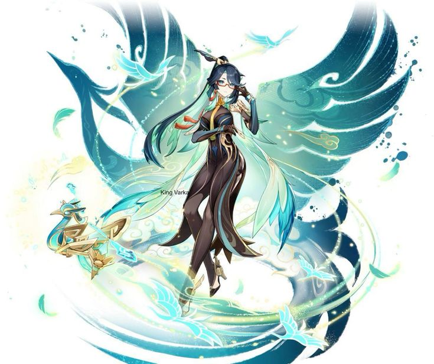
Curiosa sobre o que atrai seus discípulos ao Porto de Liyue , ela se instalou na cidade para ver por si mesma.
Raridade:★★★★★ Elemento:Anemo Arma:Catalisador
Gaming
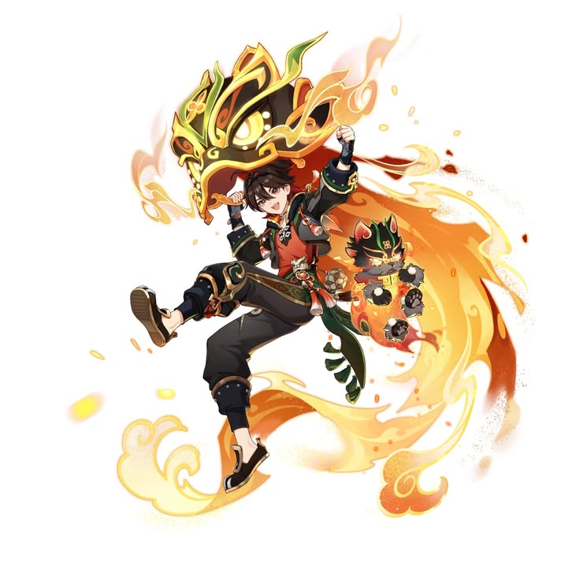
Nascido na Vila Qiaoying , Gaming deixou sua terra natal após um impasse com o pai para seguir sua paixão e se tornar um dançarino profissional de Wushou, treinando constantemente para popularizar a dança por toda Teyvat. No entanto, como sua carreira dos sonhos se mostrou financeiramente insustentável por si só, ele também aceitou um emprego como guarda na Agência de Transporte Seguro Espada e Cofre, escoltando principalmente mercadorias e pessoas de e para o Cais Yilong . Sua diligência e simpatia lhe renderam renome, e ele é considerado o melhor guarda da agência.
Raridade:★★★★ Elemento:Pyro Arma:Espadão
Lan Yan
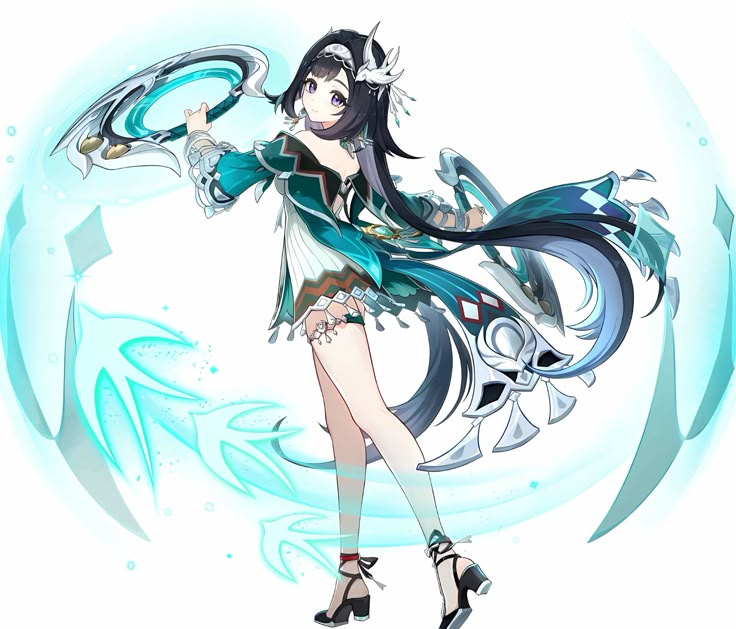
Ela é uma tecelã de rattan humilde, porém habilidosa, versada nas Artes Qimen e membro da Associação de Artesãos do Vale de Chenyu. Sua perspectiva ponderada brilha como prata para todos que a conhecem.
Raridade:★★★★ Elemento:Anemo Arma:Catalisador
Zibai
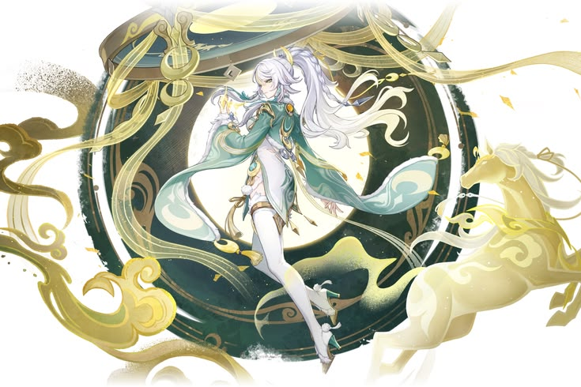
Ela já foi um Anjo que serviu como Enviada da Lua do Palácio Lunar e governou a civilização de Lang-Gan , sendo venerada como a Deusa da Terra e dos Grãos antes da destruição de Lang-Gan, eventualmente tornando-se uma das Oito Adeptas . Durante a celebração do Rito da Lanterna, após os eventos da Missão do Arconte Canção da Lua Celestial : Ato VIII - Lua Verdadeira , o Viajante e Zhongli reuniram com sucesso os três fragmentos de sua alma dividida, restaurando-a à sua forma original.
Raridade:★★★★★ Elemento:Geo Arma:Espada
Inazuma
Arconte - Raiden Shogun
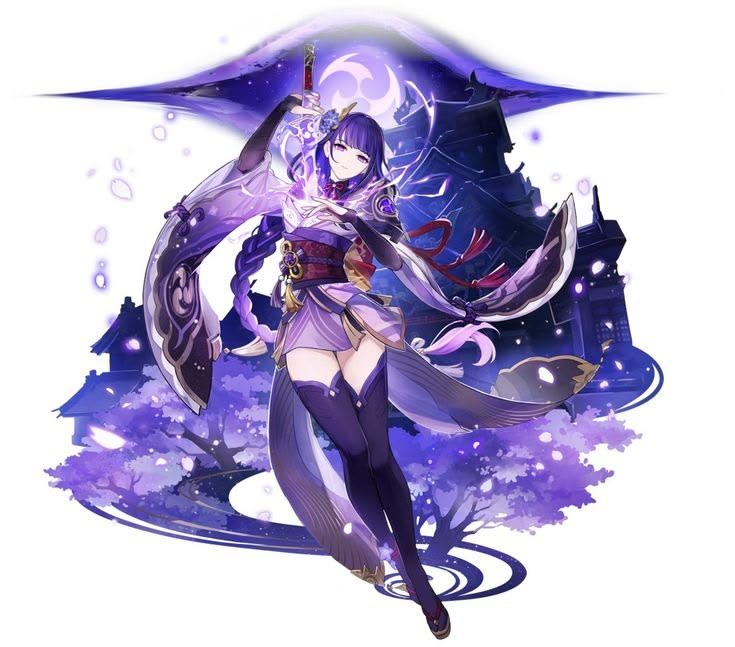
A Raiden Shogun consiste em dois seres distintos compartilhando um único corpo: Ei , a atual Electro Archon de Inazuma , e o Shogun , o fantoche criado por Ei para governar Inazuma e reinar em seu lugar. Embora o Shogun possa agir de forma independente, ele permanece estritamente vinculado às leis e diretrizes de Ei, servindo como executor de sua visão e defendendo seu ideal de Eternidade.
Raridade:★★★★★ Elemento:Electro Arma:Lança
Kamisato Ayaka
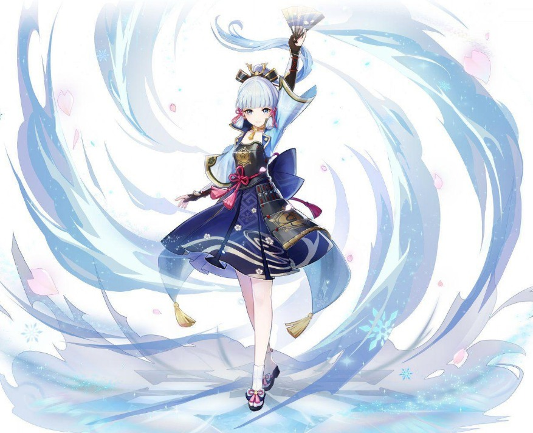
Ela é responsável pelos assuntos internos e externos do Clã Kamisato e é a irmã mais nova de Kamisato Ayato. Bela, digna e nobre, Ayaka conquistou o título de Shirasagi Himegimi e é considerada um modelo de perfeição em Inazuma.
Raridade:★★★★★ Elemento:Cryo Arma:Espada
Kaedehara Kazuha
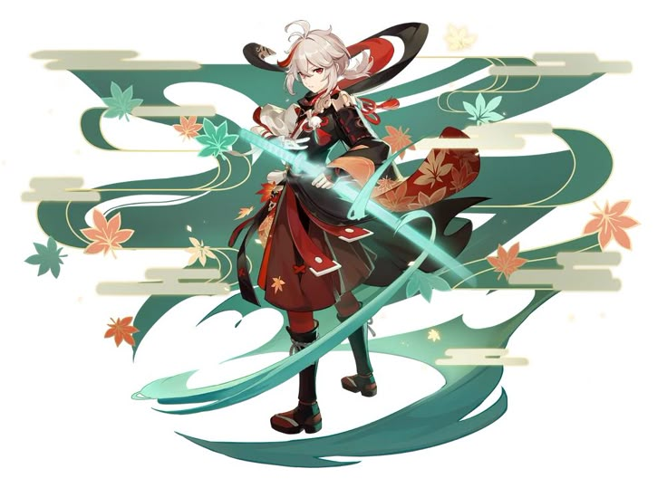
Kazuha, um samurai errante do outrora famoso Clã Kaedehara , com a habilidade de ler os sons da natureza, é um tripulante temporário da Crux. Apesar de estar sobrecarregado pelos muitos acontecimentos de seu passado, ele ainda mantém uma personalidade tranquila.
Raridade:★★★★★ Elemento:Anemo Arma:Espada
Yoimiya
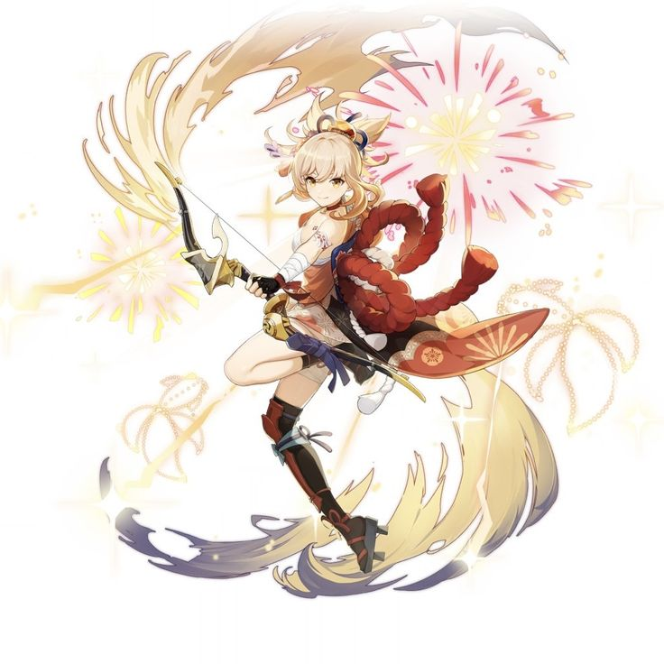
Yoimiya é a atual proprietária da Naganohara Fireworks ; com seus fogos de artifício coloridos e personalidade extrovertida, Yoimiya é amada por todos na Ilha Narukami. Ela foi apelidada de "Rainha do Festival de Verão", pois acreditam que o verão não é o mesmo sem ela.
Raridade:★★★★★ Elemento:Pyro Arma:Arco
Sayu
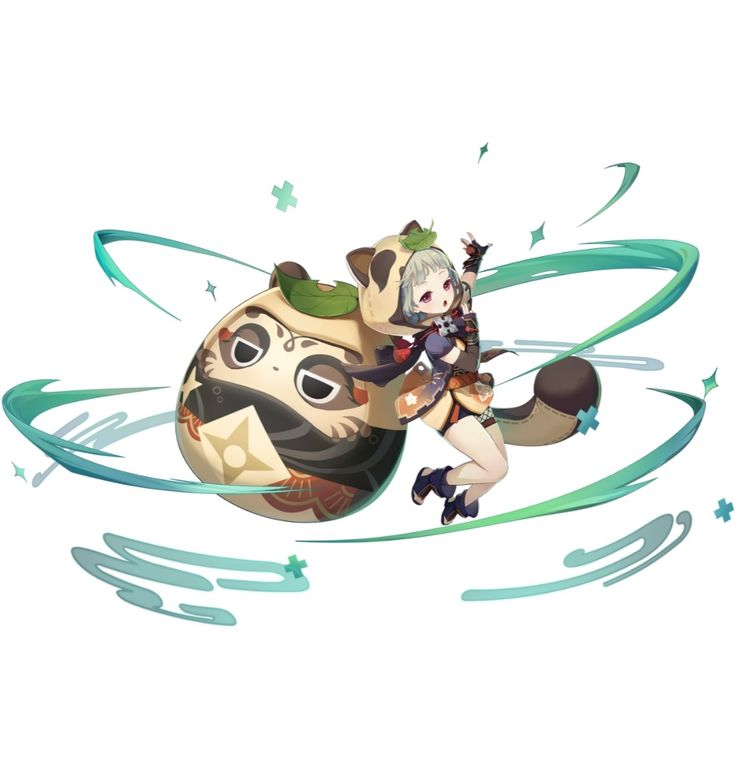
Uma ninja do Shuumatsuban que está com dificuldades para crescer. Sayu acredita que dormir pode ajudá-la a crescer, por isso prefere usar suas técnicas ninja para se esconder e "relaxar".
Raridade:★★★★ Elemento:Anemo Arma:Espadão
Kujou Sara
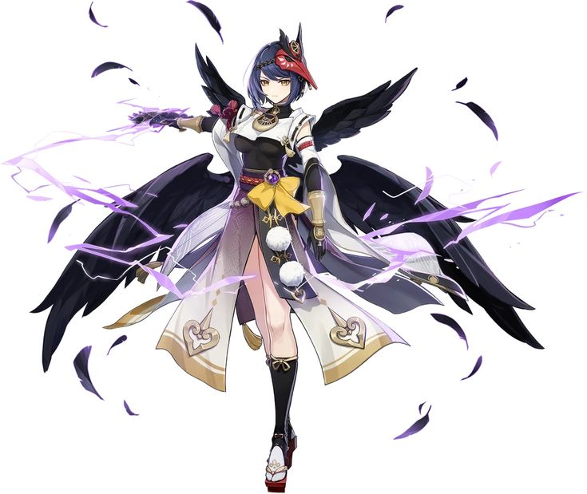
Sara, uma tengu , é filha adotiva do Clã Kujou da Comissão Tenryou . Leal tanto ao seu clã quanto ao Shogun , Sara cumpre as ordens do Shogun.
Raridade:★★★★ Elemento:Electro Arma:Arco
Sangonomiya Kokomi
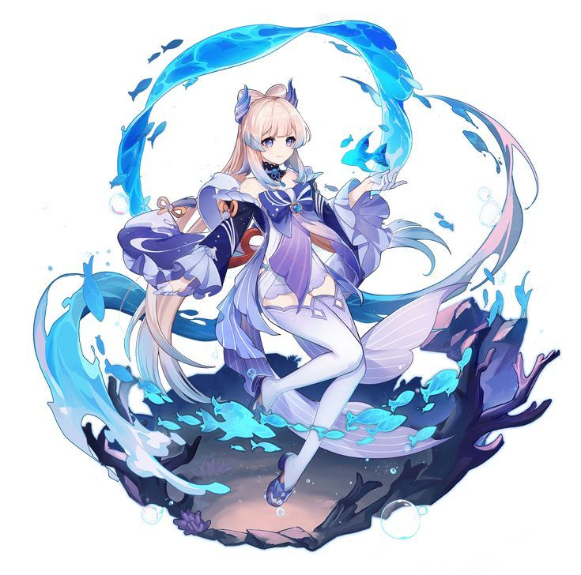
A jovem Sacerdotisa Divina da Ilha Watatsumi e descendente do Clã Sangonomiya , Kokomi, é responsável pela maioria dos assuntos de Watatsumi, assumindo sozinha pesadas responsabilidades na esperança de dar ao povo da Ilha Watatsumi a esperança e a felicidade que desejam.
Raridade:★★★★★ Elemento:Hydro Arma:Catalisador
Thoma
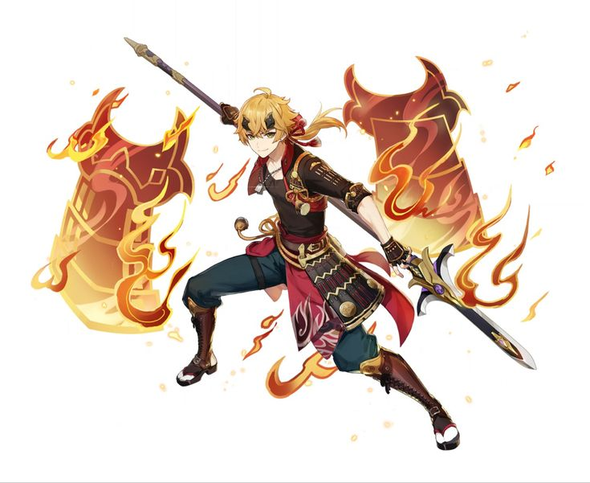
Originário de Mondstadt , Thoma é a governanta sociável e responsável do Clã Kamisato e uma conhecida "faz-tudo" em Inazuma . Tendo construído uma poderosa rede de contatos, Thoma defende os direitos e interesses da Comissão Yashiro com a máxima seriedade.
Raridade:★★★★ Elemento:Pyro Arma:Lança
Arataki Itto
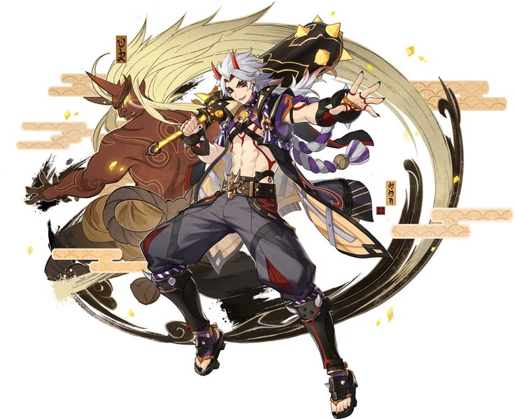
Descendente orgulhoso e barulhento do oni carmesim, Itto também é o líder e fundador da Gangue Arataki. Embora não seja um vilão, sua reputação como delinquente em Inazuma City deixa a desejar.
Raridade:★★★★★ Elemento:Geo Arma:Espadão
Gorou
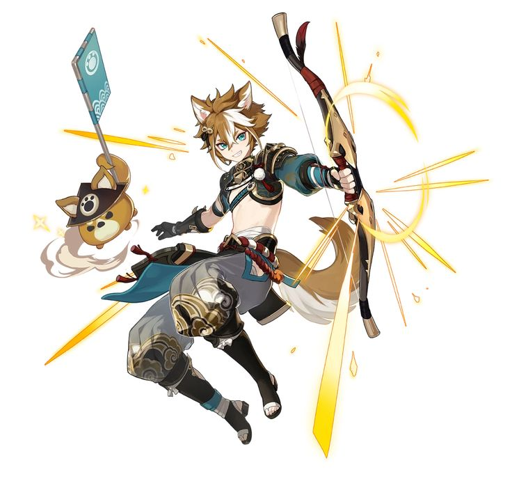
Ele é um general do Exército Watatsumi . Corajoso e confiável, seus homens sabem que podem confiar nele tanto dentro quanto fora do campo de batalha.
Raridade:★★★★ Elemento:Geo Arma:Arco
Yae Miko
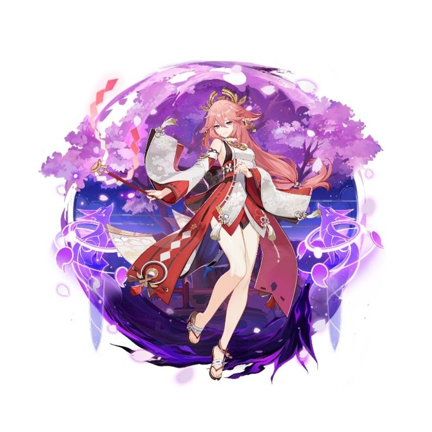
Uma kitsune multifacetada, Yae Miko supervisiona o Grande Santuário Narukami, é dona da Editora Yae e é serva e amiga da Eternidade.
Raridade:★★★★★ Elemento:Electro Arma:Catalisador
Kamisato Ayato
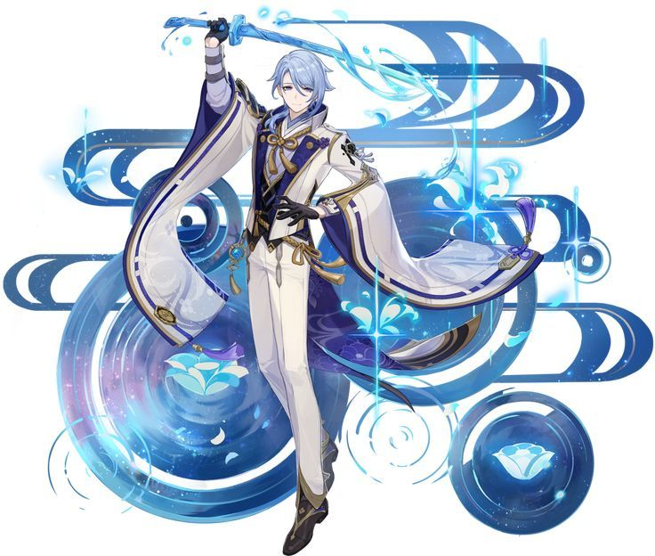
Ele é o atual chefe do Clã Kamisato , irmão mais velho de Kamisato Ayaka e Comissário de Yashiro. Engenhoso e astuto, Ayato mantém um perfil mais discreto que sua irmã e se concentra em assuntos governamentais na Comissão.
Raridade:★★★★★ Elemento:Hydro Arma:Espada
Kuki Shinobu
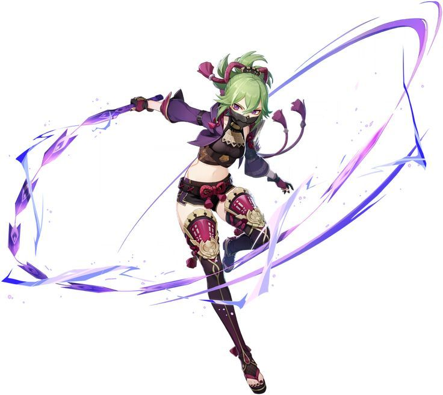
Antiga sacerdotisa do Grande Santuário Narukami, ela é a parceira de Arataki Itto e vice-líder da Gangue Arataki . Graças ao seu profissionalismo e qualificações, Kuki Shinobu ajudou a Gangue Arataki a sair de muitos problemas e até expandiu os negócios da gangue para além das travessuras e delinquências habituais.
Raridade:★★★★ Elemento:Electro Arma:Espada
Shikanoin Heizou
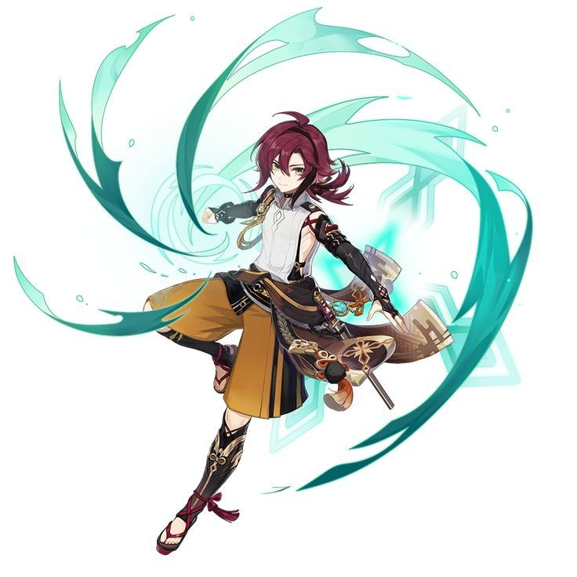
Ele é o detetive número um da Comissão Tenryou, nutrindo uma rivalidade com Sango, da Agência de Detetives Bantan Sango.
Raridade:★★★★ Elemento:Anemo Arma:Catalisador
Kirara
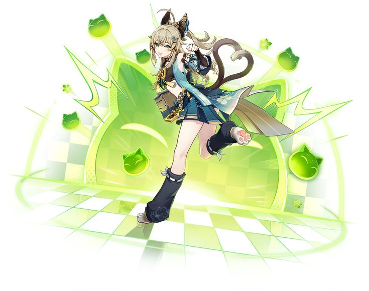
Uma youkai — uma nekomata, especificamente — Kirara é a Mensageira de Nível Ouro da Komaniya Express , sediada em Inazuma . Sua diligência em garantir que cada pacote seja entregue no lugar certo aumentou a fama de sua empresa e a sua própria, tornando-a a única mensageira a lidar com entregas internacionais. Ela aprecia cada entrega que faz, pois considera esses passeios como algo pessoal.
Raridade:★★★★ Elemento:Dendro Arma:Espada
Yumemizuki mizuki
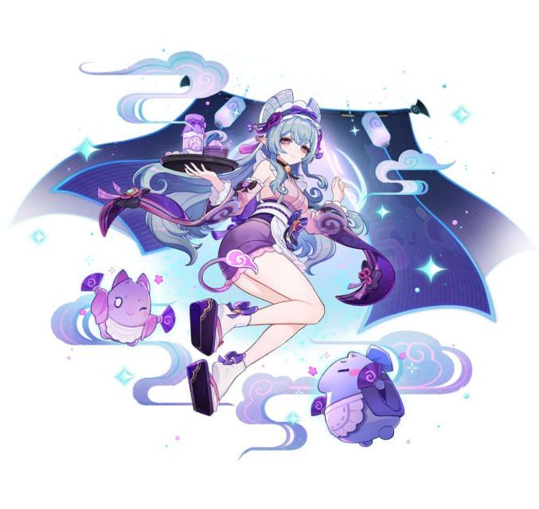
Ela é uma renomada psicóloga clínica de Inazuma. Após retornar de Natlan, tornou-se a principal investidora fundadora e acionista majoritária da Aisa Bathhouse. Como uma yumekui-baku, ela tem a habilidade de devorar os pesadelos de seus pacientes, ajudando-os a melhorar sua saúde mental.
Raridade:★★★★★ Elemento:Anemo Arma:Catalisador
Sumeru
Arconte - Nahida
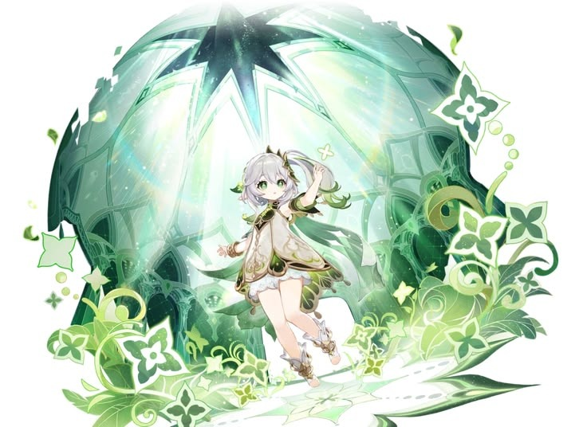
Como Senhora Menor Kusanali e Arconte Dendro, ela se esforça para ter uma presença mais forte em Sumeru agora que foi libertada de seu longo confinamento no Santuário de Surasthana.
Raridade:★★★★★ Elemento:Dendro Arma:Catalisador
Tighnari
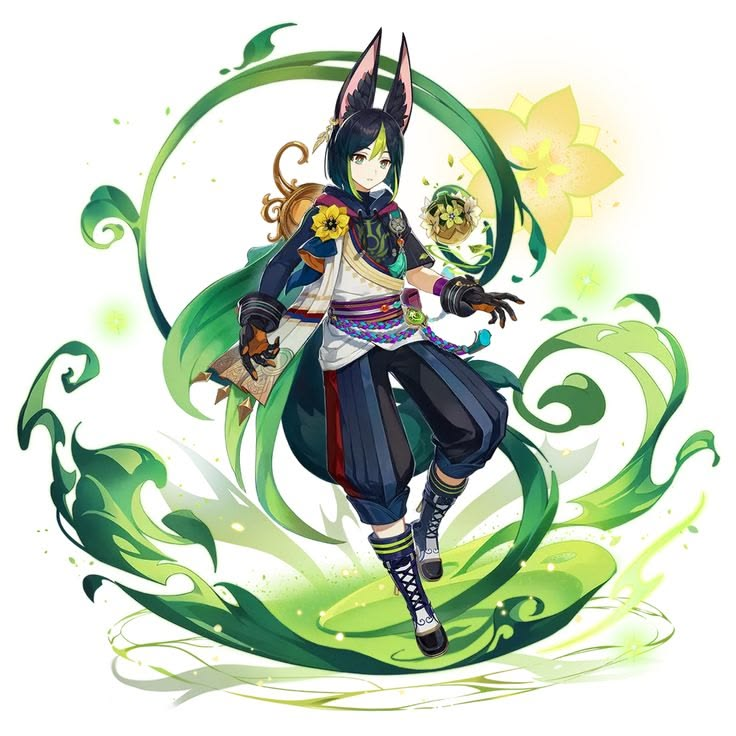
Tighnari é o severo Chefe dos Guardas Florestais e mentor de Collei. Apesar de sua inteligência, ele prefere viver uma vida solitária nas profundezas da Floresta Avidya em vez de na torre de marfim da Academia Sumeru.
Raridade:★★★★★ Elemento:Dendro Arma:Arco
Collei
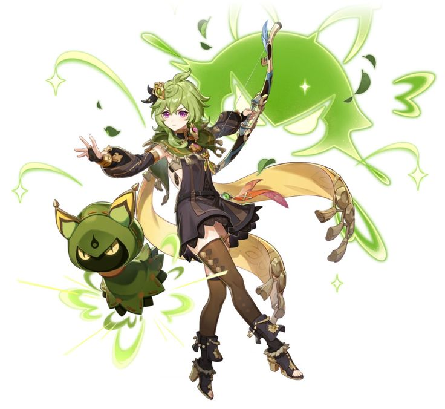
Originalmente uma vítima de experimentação humana Fatui afetada por Eleazar, Collei vagou pelo mundo como uma forasteira até conhecer Amber em Mondstadt. Desde então, Collei deu a volta por cima e atualmente trabalha como Guarda Florestal na Floresta Avidya.
Raridade:★★★★ Elemento:Dendro Arma:Arco
Dori
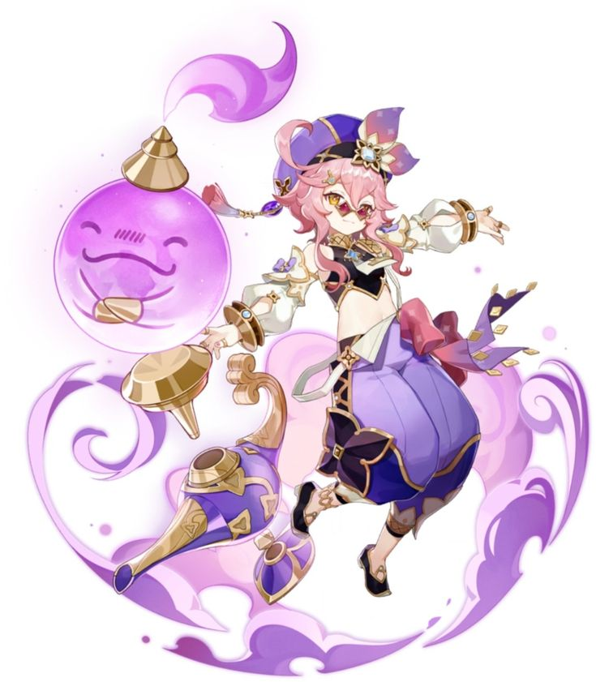
A proprietária do Palácio de Alcazarzaray e comerciante de grande prestígio, "Lorde Sangemah Bay", é conhecida por sua habilidade em obter qualquer coisa que uma pessoa precise, contanto que tenha Mora suficiente para pagar seus preços exorbitantes.
Raridade:★★★★ Elemento:Electro Arma:Espadão
Cyno
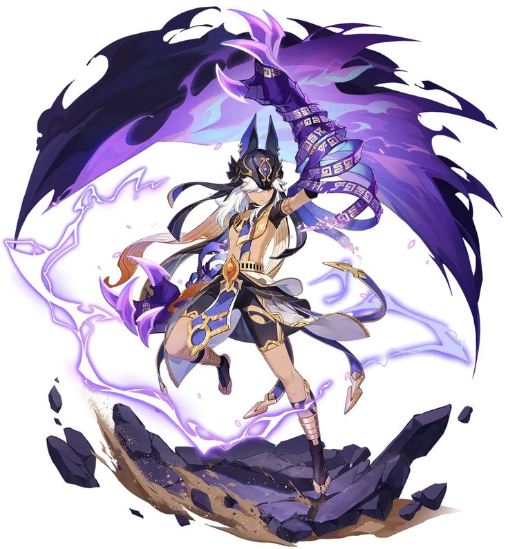
Como General Mahamatra, Cyno lidera a Matra e infunde medo nos corações dos pesquisadores da Academia Sumeru . Apesar disso, Cyno tem um lado divertido fora de seu papel na Academia, já que ele tem afinidade com o TCG Genius Invokation e constantemente faz piadas sem graça.
Raridade:★★★★★ Elemento:Electro Arma:Lança
Candace
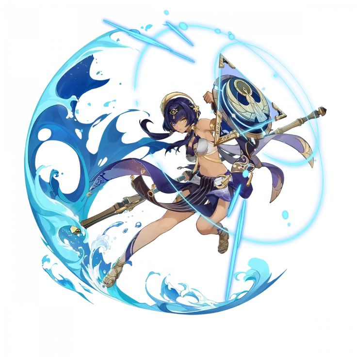
Descendente de Al-Ahmar e guardiã da vila de Aaru, Candace é gentil com os viajantes que a visitam, mas implacável com aqueles que violam as regras da vila.
Raridade:★★★★ Elemento:Hydro Arma:Lança
Nilou
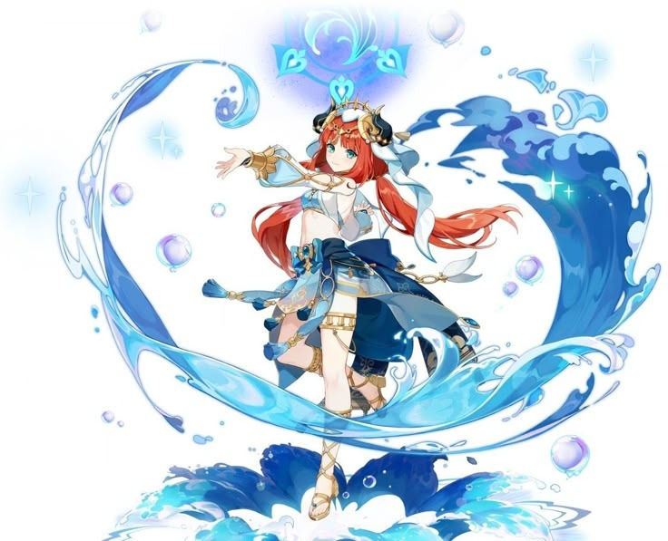
Dançarina do Teatro Zubayr, a dança de Nilou é elegante e graciosa; porém, fora dos holofotes do palco, ela é como qualquer outra garota da sua idade: calorosa, sorridente e amigável.
Raridade:★★★★★ Elemento:Hydro Arma:Espada
Layla
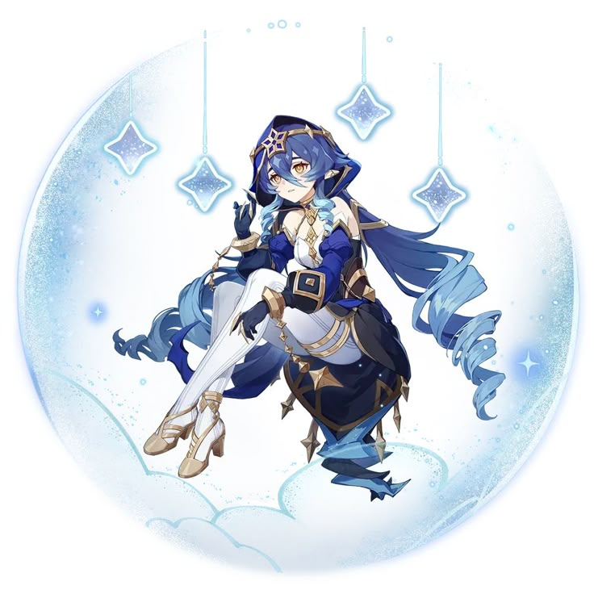
Ela é aluna do Rtawahist Darshan, especializada em Astrologia Teórica. Sofrendo de privação crônica de sono e, consequentemente, de saúde frágil, Layla acredita que "A Bênção das Estrelas" é a razão pela qual acorda sonâmbula e encontra seus trabalhos completamente concluídos.
Raridade:★★★★ Elemento:Cryo Arma:Espada
Andarilho
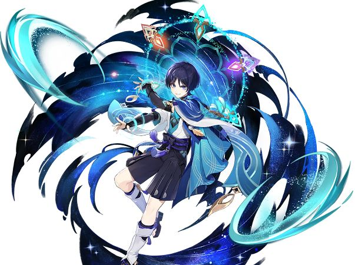
Ele já foi Scaramouche, o Sexto dos Onze Arautos Fatui, também conhecido por seu codinome " O Baladeiro ". Depois de apagar suas identidades anteriores de Irminsul, ele se tornou um andarilho até que voluntariamente recuperou suas memórias. Atualmente, ele é um Driyosh do Vahumana Darshan.
Raridade:★★★★★ Elemento:Anemo Arma:Catalisador
Faruzan
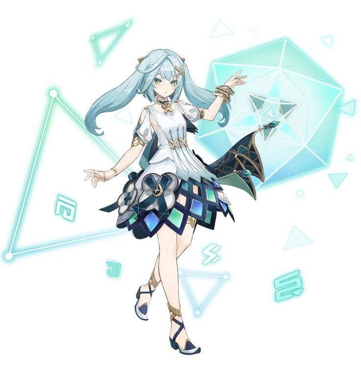
Ela é uma renomada professora da Academia Sumeru e membro do Haravatat Darshan. Recentemente, retornou à Academia após desvendar um enigma e escapar das ruínas que a aprisionaram um século atrás.
Raridade:★★★★ Elemento:Anemo Arma:Arco
Alhaitham
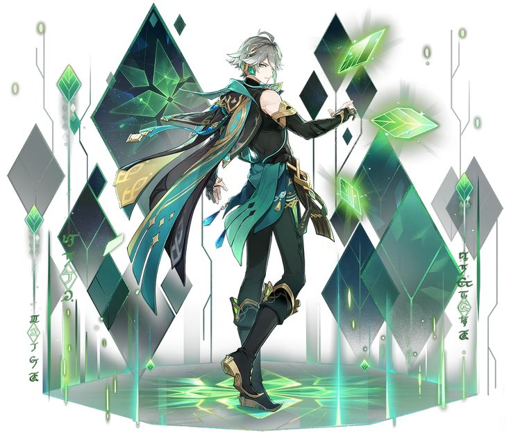
Alhaitham é membro do Haravatat da Academia Sumeru e escriba da Academia, responsável por documentar suas descobertas e redigir decretos. Apesar de sua genialidade, as pessoas dentro da Academia ficam perplexas com Alhaitham devido à sua relutância em aspirar a cargos mais elevados, apesar de seu egocentrismo, e muitos discordam dele por sua visão intransigente sobre a racionalidade e a verdade.
Raridade:★★★★★ Elemento:Dendro Arma:Espada
Dehya
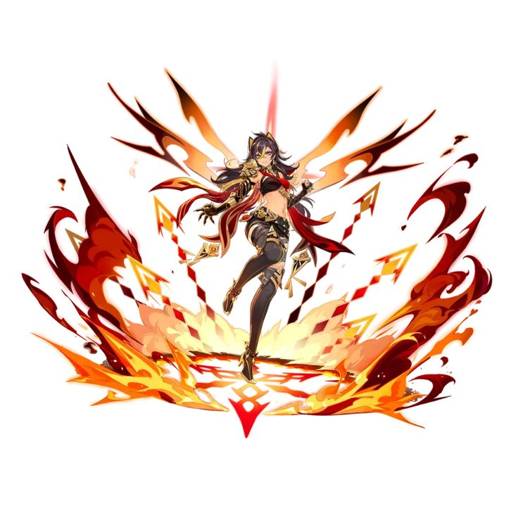
Uma guerreira feroz e forte, a "Cina de Chamas" Dehya é considerada uma lenda entre os Eremitas por sua força, paixão e consciência. Inconformada com as condições que forçam a maioria dos habitantes do deserto a permanecerem lá, ela aspira a trazer esperança de volta às areias que considera seu lar.
Raridade:★★★★★ Elemento:Pyro Arma:Espadão
Kaveh
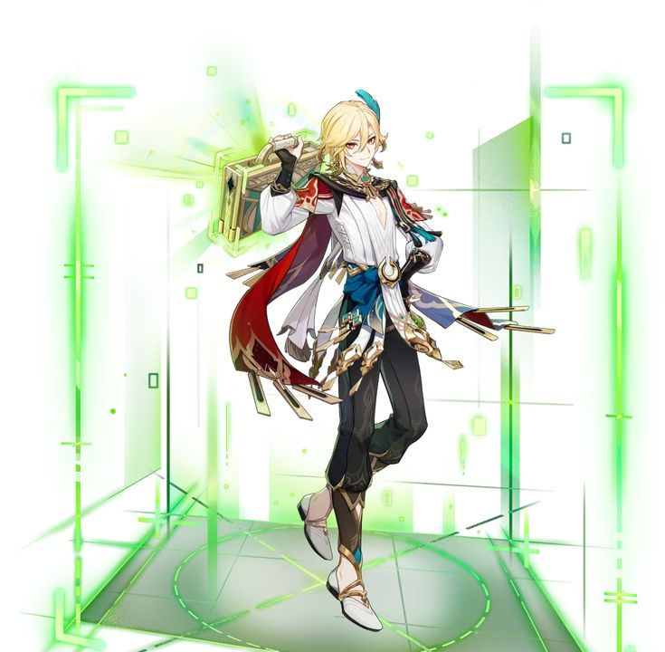
O arquiteto por trás do Palácio de Alcazarzaray, Kaveh, foi aluno do Kshahrewar Darshan da Academia Sumeru e se formou com honras, ganhando o apelido de "Luz de Kshahrewar". Tendo falido após a construção do Palácio de Alcazarzaray, ele foi forçado a residir com Alhaitham , com quem mantém uma relação complexa. Apesar da fachada ilustre que mantém para os outros, Kaveh é frequentemente atormentado pela culpa pela morte de seu pai, envergonhado de sua pobreza e lutando para realizar seus ideais.
Raridade:★★★★ Elemento:Dendro Arma:Espadão
Sethos
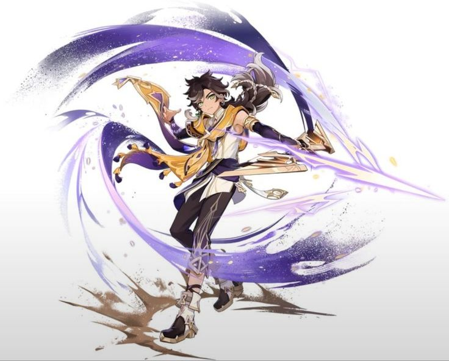
Ele é o líder do Templo do Silêncio e um antigo receptáculo de Hermanúbis.
Raridade:★★★★ Elemento:Electro Arma:Arco
Fontaine
Arconte - Furina
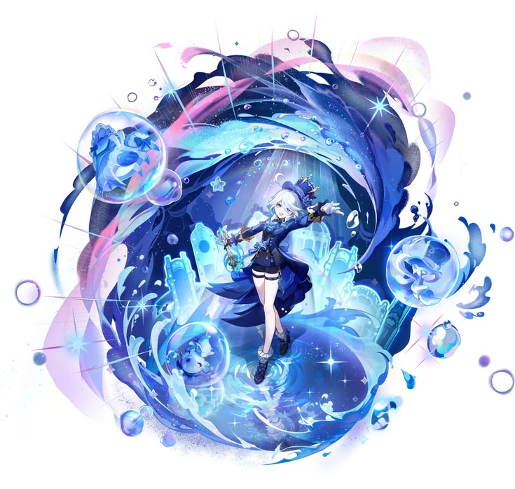
Apresentada como a extravagante e arrogante Arconte Hydro , a teatralidade de Furina acaba por se revelar uma persona pública cuidadosamente construída, que ela abandona posteriormente para viver uma vida mais humilde como atriz e consultora artística.
Raridade:★★★★★ Elemento:Hydro Arma:Espada
Lyney
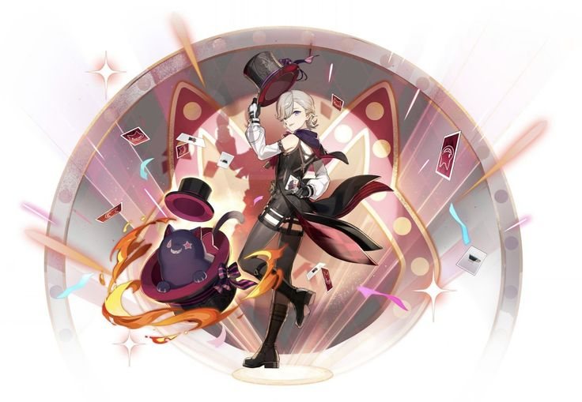
Habilidoso e eloquente, Lyney é o Grande Mago de Fontaine e irmão gêmeo de Lynette . Após a morte de seus pais e tendo sido salvo de um nobre abusivo por seu " Pai ", Lyney assumiu missões para a Casa da Lareira e afirmou que eventualmente se tornará o sucessor de "Pai".
Raridade:★★★★★ Elemento:Pyro Arma:Arco
Lynette
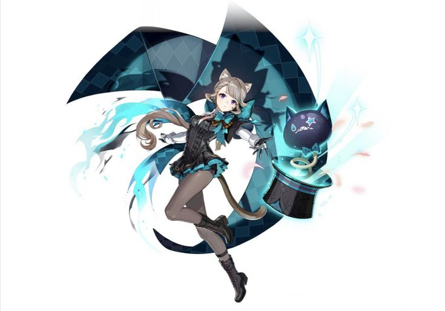
Quieta e reservada, Lynette trabalha como assistente do mago seu irmão Lyney. Após a morte dos pais e tendo sido salva de um nobre abusivo por seu " Pai ", Lynette também serviu como "olhos" e "ouvidos" da Casa da Lareira.
Raridade:★★★★ Elemento:Anemo Arma:Espada
Freminet
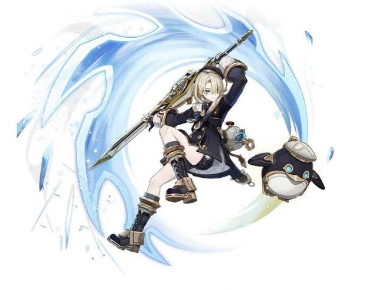
Apesar de sua habilidade e experiência como mergulhador profissional, Freminet prefere ficar longe dos holofotes, contentando-se em simplesmente cumprir ordens e encontrar paz ao lado das tidalgas e flores romáricas subaquáticas.
Raridade:★★★★ Elemento:Cryo Arma:Espadão
Neuvillette
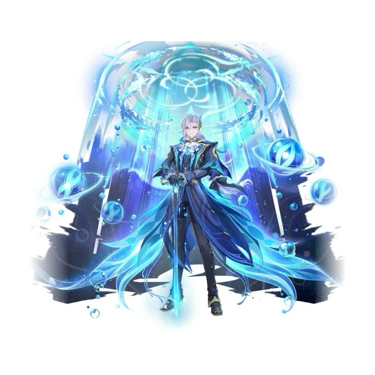
Neuvillette é o Iudex de Fontaine e o líder do Fantasma da Marechaussee. Embora Neuvillette respeite as regras da corte com a máxima reverência, ele é bastante distante quando se trata de emoções humanas e frequentemente se isola da vida pública.
Raridade:★★★★★ Elemento:Hydro Arma:Catalisador
Whiriothesley
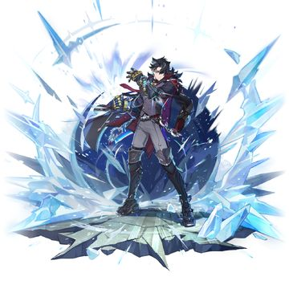
Após ter matado seus pais adotivos abusivos para salvar seus irmãos adotivos, Wriothesley foi condenado e exilado para a Fortaleza de Meropide na adolescência. Ele acabou se tornando seu Administrador e implementou uma série de reformas sob seu governo, servindo como exemplo para os prisioneiros.
Raridade:★★★★★ Elemento:Cryo Arma:Catalisador
Charlotte
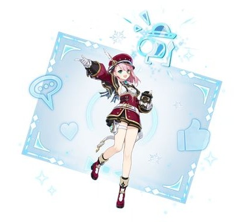
Charlotte, jornalista do The Steambird, está sempre à procura de um furo jornalístico exclusivo. Implacável e incansável, ela não desiste até descobrir a verdade, mesmo que isso a coloque em perigo.
Raridade:★★★★ Elemento:Cryo Arma:Catalisador
Navia
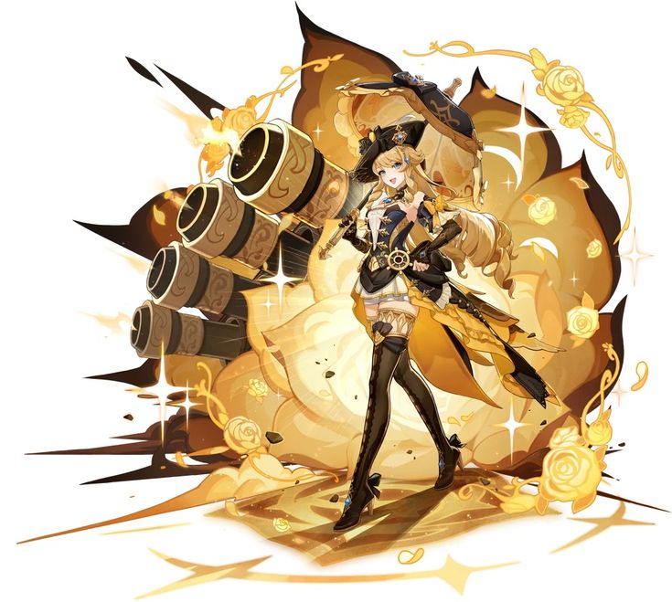
Ela é a otimista presidente da Spina di Rosula, um cargo anteriormente ocupado por seu falecido pai, Callas. Seu espírito entusiasmado e tenaz permite que ela continue ajudando o povo de Fontaine, apesar das várias perdas em sua vida.
Raridade:★★★★★ Elemento:Geo Arma:Espadão
Chevreuse
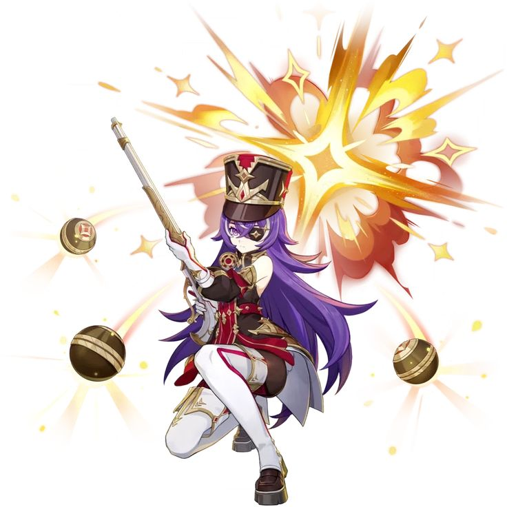
Ela é a capitã da Patrulha Especial de Segurança e Vigilância da Maison Gardiennage, com um senso de justiça e uma abordagem à aplicação da lei pouco ortodoxos, porém firmes.
Raridade:★★★★ Elemento:Pyro Arma:Lança
Chiori
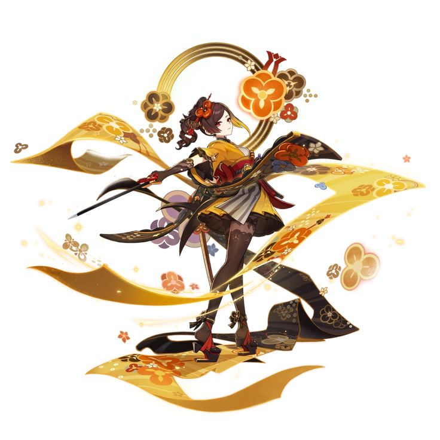
Chiori, uma designer independente de Inazuma que se esforça para tornar sua marca internacionalmente reconhecida em toda Teyvat , é a proprietária trabalhadora e determinada da Chioriya Boutique, uma grife de moda em Fontaine que também serve como uma "boutique de inteligência" para as forças policiais. Firme em sua busca pelo que deseja, ela se recusa a mudar seus métodos e personalidade para se conformar às normas sociais.
Raridade:★★★★★ Elemento:Geo Arma:Espada
Clorinde
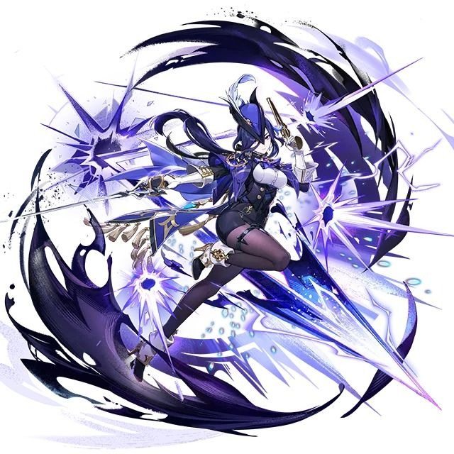
Ela é a Campeã Duelista mais forte em Fontaine e já serviu como guarda-costas de Furina.
Raridade:★★★★★ Elemento:Electro Arma:Espada
Sigewinne
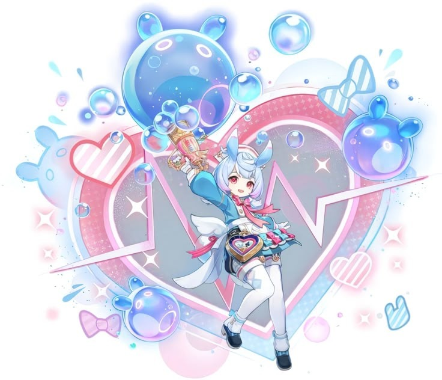
Sigewinne é a enfermeira-chefe residente da Fortaleza de Meropide . No passado, ela escolheu assumir uma aparência humana para salvar uma criança com quem fez amizade numa época em que as Melusinas eram desprezadas. Contudo, sua transformação contrariava as leis de Fontaine , resultando em sua condenação à Fortaleza de Meropide.
Raridade:★★★★★ Elemento:Hydro Arma:Arco
Emilie
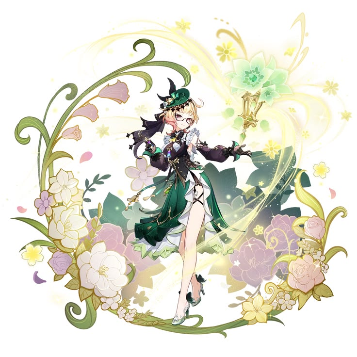
Ela é uma renomada designer de perfumes em Fontaine . De acordo com Calcagni , Emilie é autônoma e as damas da moda de Fontaine procuram muito seus produtos. Ela também trabalha em estreita colaboração com as forças de detetives e a polícia como uma "limpadora forense" nos bastidores, o que lhe permite fornecer informações adicionais que a maioria das pessoas poderia perder, ao custo de forçá-la a se familiarizar mais com a morte do que gostaria.
Raridade:★★★★★ Elemento:Dendro Arma:Lança
Escoffier
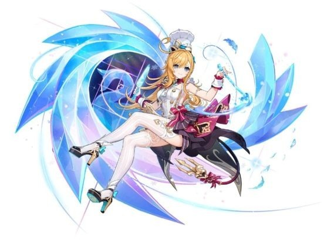
Anteriormente chef do Hotel Debord, Escoffier é uma renomada chef de Fontaine que preza pela extrema qualidade em seus pratos. Ela também é temida por sua severidade, devido a esses padrões, repreendendo aqueles que desperdiçam comida de forma inadequada.
Raridade:★★★★★ Elemento:Cryo Arma:Lança
Natlan
Arconte - Mavuika
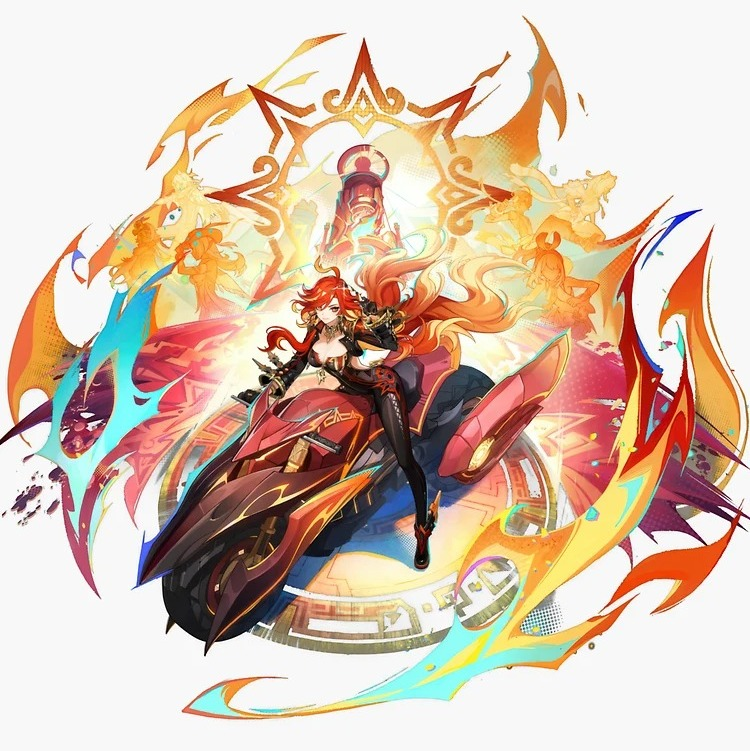
Portadora do antigo nome Kiongozi e conhecida por seu nome divino Haborym, ela é a atual Deusa da Guerra e Arconte Pyro dos Sete, presidindo Natlan.
Raridade:★★★★★ Elemento:Pyro Arma:Espadão
Mualani
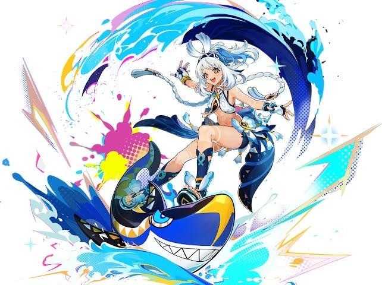
Sendo guia, surfista e proprietária de uma loja de esportes aquáticos para o Povo das Fontes, que carrega o nome ancestral UMJ ("UMJ", Umoja ), Mualani é uma pessoa ativa e amável, sempre capaz de satisfazer seus clientes.
Raridade:★★★★★ Elemento:Hydro Arma:Catalisador
Kachina
Portadora do antigo nome de UTBT ("UTBT", Uthabiti ), Kachina é uma jovem guerreira pertencente aos Filhos dos Ecos, determinada a se tornar forte apesar dos inúmeros fracassos que sofreu.
Raridade:★★★★ Elemento:Geo Arma:Lança
Kinich
Kinich, um Caçador de Saurianos dos Descendentes da Copa das Árvores com o Nome Antigo MLP ("MLP", Malipo ), é um indivíduo taciturno que tem um talento especial para calcular o preço de qualquer pedido — até mesmo de trabalhos sujos — devido à sua filosofia utilitarista. Ele é quase sempre visto com o egocêntrico autoproclamado "Todo-Poderoso Senhor dos Dragões" K'uhul Ajaw, com quem ele frequentemente discute.
Raridade:★★★★★ Elemento:Dendro Arma:Espadão
Xilonen
Xilonen, uma gravadora de nomes para os Filhos dos Ecos, portando seu próprio nome ancestral BRK ("BRK", Baraka ), costuma aproveitar seu tempo livre cochilando ao sol, mas na forja, sua habilidade artesanal é incomparável.
Raridade:★★★★★ Elemento:Geo Arma:Espada
Chasca
A mais infame Pacificadora do Clã Flor-Pena e figura conhecida nas Guerras dos Guardiões da Noite , Chasca carrega o Nome Antigo de VK ("VK", Vuka ). Ela está familiarizada com conflitos — por vezes lutando com seus próprios conflitos internos — mas, apesar da opinião alheia, ela sempre consegue se manter acima deles.
Raridade:★★★★★ Elemento:Anemo Arma:Arco
Ororon
Nascido com uma alma "incompleta", Ororon é um excêntrico dos Mestres do Vento Noturno que carrega o Nome Antigo BDI ("BDI", Bidii ). Ele vive uma vida humilde fora dos limites da tribo, cuidando de seus vegetais e pulgões flogisto.
Raridade:★★★★ Elemento:Electro Arma:Arco
Citlali
Portadora do antigo nome Ukumbuko , Citlali, também conhecida como " Vovó Itztli " entre seus companheiros Mestres do Vento Noturno , é uma xamã poderosa e renomada da tribo que tende a viver em reclusão. Embora se irrite facilmente e seja um tanto indulgente consigo mesma, ela possui um lado mais introspectivo em sua personalidade.
Raridade:★★★★★ Elemento:Cryo Arma:Catalisador>
Varesa
Varesa, gerente de um pomar originária do Coletivo da Abundância , leva uma vida geralmente tranquila. Em batalha, é uma guerreira de grande força e velocidade, apelidada de "Heroína Mascarada" pelas crianças de sua tribo. Ela é conhecida por gostar de competições de comida, devorando quantidades enormes graças ao seu apetite excepcionalmente grande.
Raridade:★★★★★ Elemento:Electro Arma:Catalisador
Iansan
Iansan é instrutora de fitness e Mentora Campeã da Peregrinação do Retorno da Chama Sagrada, do Coletivo da Abundância. Ela possui o Nome Antigo UWZ ("UWZ", Uwezo ).
Raridade:★★★★ Elemento:Electro Arma:Lança
Ifa
Ifa é um renomado veterinário Sauriano do Clã Flor-Pena . Ele é amigo de Ororon e frequentemente entrega vegetais a Citlali em seu nome.
Raridade:★★★★ Elemento:Anemo Arma:Catalisador
Skirk
Uma misteriosa espadachim vinda do mar de estrelas , ela foi mestra de Tartaglia durante seu tempo no Abismo e é discípula de Surtalogi — um dos Cinco Pecadores de Khaenri'ah.
Raridade:★★★★★ Elemento:Cryo Arma:Espada
Nod-Krai
Columbina
Conhecida como a Deusa da Lua de Nod-Krai, Kuutar dos Herdeiros da Lua Gelada e, anteriormente, a Donzela, Terceira das Arautas Fatui, ela nasceu em um mundo cruel e foi lançada à solidão desde o momento de sua criação. Outrora uma andarilha por caminhos sinuosos e memórias desvanecidas, ela encontrou sua identidade através dos laços que formou e das esperanças silenciosas que reivindicou como suas. Embora carregue muitos nomes, para aqueles mais próximos a ela, ela é Columbina Hyposelenia — e prefere assim.
Raridade:★★★★★ Elemento:Hydro Arma:Catalisador
Flins
Um faroleiro de Nod-Krai, guardião solitário do farol e do cemitério no Cemitério da Última Noite. Embora aparente ser enigmático e frio, ele é um cavalheiro culto e cortês, e um dos últimos Fae da Terra da Neve ainda em Nod-Krai.
Raridade:★★★★★ Elemento:Electro Arma:Lança
Ineffa
Ela é uma criação de Aino, servindo como uma empregada doméstica multifuncional e autômato de batalha criado a partir de diversos fragmentos de diferentes nações. Seu núcleo se originou de Ix Raq'lapuj Chue'q Buluk, o Décimo Primeiro dos Treze Senhores Soberanos, como a parte dela que desejava abandonar sua vingança contra a humanidade e encontrar um novo lugar para pertencer.
Raridade:★★★★★ Elemento:Electro Arma:Lança
Aino
Ela é uma criança prodígio e fundadora da Oficina de Artesanato Clink-Clank Krumkake, que criou Ineffa e muitas outras máquinas complexas. Ela é órfã e vê suas criações e parafusos como sua "família".
Raridade:★★★★ Elemento:Hydro Arma:Espadão
Lauma
Como a Cantora da Lua dos Descendentes da Lua Gelada , Lauma é uma figura sábia e respeitada dentro do grupo, e goza da confiança de todas as espécies da vida selvagem. Ela é imensamente gentil e busca encontrar uma solução pacífica para qualquer conflito; contudo, sua firmeza se revelará caso alguém confunda sua benevolência com submissão.
Raridade:★★★★★ Elemento:Dendro Arma:Catalisador
Nefer
Originária de Sumeru, ela é a chefe do Curatório dos Segredos e membro da Guilda Voynich. Ela é incrivelmente calculista e conhecedora, a ponto de algumas pessoas especularem que ela consegue prever o futuro.
Raridade:★★★★★ Elemento:Dendro Arma:Catalisador
Jahoda
Funcionária do Curatório dos Segredos, autoproclamada caçadora de recompensas lendária. Ex-membro da Gangue Seahook, foi recrutada por Nefer para ser a única fachada, a fim de encobrir os informantes e as atividades de Nefer na Rede de Inteligência do Norte.
Raridade:★★★★ Elemento:Anemo Arma:Arco
Illuga
Illuga é o atual Líder de Esquadrão de uma equipe de investigação dos Guardiões da Luz, conhecida como os Orioles do Pesadelo. Suas experiências passadas lidando com a Caçada Selvagem o levaram a se importar profundamente com cada membro de seu esquadrão e a garantir que eles nunca enfrentem as mesmas tragédias que ele um dia sofreu.
Raridade:★★★★ Elemento:Geo Arma:Lança
Linnea
Criada entre humanos como uma das últimas fadas da Terra das Neves em Nod-Krai, bem como uma das últimas Aves de Augúrio existentes, Linnea atualmente trabalha como conselheira da Guilda dos Aventureiros e como naturalista.
Raridade:★★★★★ Elemento:Geo Arma:Arco
Snezhnaya
Arconte - Anastasya
Como Tsaritsa e Arconte Cryo, Anastasya governa Snezhnaya como uma figura fria, porém benevolente, tendo declarado guerra aos Princípios Celestiais pelas transgressões que cometeram contra o povo de Teyvat.
Raridade:★★★★★ Elemento:Cryo Arma:Arco
Sandrone
Ela é a Sétima dos Onze Mensageiros Fatui, chefe do Palácio da Armaria e uma das supervisoras da Guilda dos Aventureiros. Ela interpreta todos os fenômenos através do prisma da matemática e é uma dama elegante que nunca falta a um chá da tarde.
Raridade:★★★★★ Elemento:Cryo Arma:Espadão
Tartaglia
Ele é o décimo primeiro dos onze Mensageiros Fatui. Onde quer que vá, o perigo o segue, e Childe está sempre ávido por um desafio, o que o torna extremamente perigoso, apesar de ser o membro mais jovem.
Raridade:★★★★★ Elemento:Hydro Arma:Arco
Arlecchino
Ela é a quarta dos onze Mensageiros Fatui e a atual chefe da Casa da Lareira. É chamada de "Pai" pelos membros da Casa, a quem ela chama de seus "filhos".
Raridade:★★★★★ Elemento:Pyro Arma:Lança
Odette
Como Prima Ballerina da Trupe Korolevskiy, ela dança com um comportamento gélido e uma precisão inabalável. Fora do palco, ela também trabalha como membro das Fatui e é conhecida por ser a candidata favorita para herdar o lugar de Arauta de sua mentora, Signora.
Raridade:★★★★★ Elemento:Cryo Arma:Espada
Alyosha
Ele é um caçador renomado originário da tundra de Snezhnayan, que opera ao lado de seu companheiro Tugarin.
Raridade:★★★★ Elemento:Electro Arma:Lança
Vesna
Comandante da Druzhna, ela é considerada a mão direita da czarina e está frequentemente ao seu lado, juntamente com a chefe das criadas da casa real Snezhnayan, Danica .
Raridade:★★★★★ Elemento:Anemo Arma:Espada
Vodyanitsa
Uma ninfa aquática de Snezhnaya e a prima donna da trupe Korolevskiy, ela é famosa por sua voz hipnotizante, que dizem esconder um fascínio sobrenatural capaz de enfeitiçar quem a ouve.
Raridade:★★★★★ Elemento:Hydro Arma:Catalisador
Mitya
Mitya é um cientista da Comissão Real de Energia de Snezhnaya e especialista em pesquisa energética. Brilhante, porém extremamente sociável e extrovertido, ele tem a tendência de se esquivar do trabalho e, ocasionalmente, se vê atrapalhado por seu próprio cachecol senciente sempre que se estende demais em suas conversas.
Raridade:★★★★★ Elemento:Electro Arma:Catalisador
Valeriy
Comandante do "Batalhão de Missões Especiais" do 1º Regimento da Guarda Real de Granadeiros, com um histórico excepcional. Nas duas grandes áreas de proteção VIPs e execução pontual de planos, ele sempre atuou como um escudo inabalável.
Raridade:★★★★ Elemento:Electro Arma:Espada
Danica
A governanta principal da casa real Snezhnaya, ela é considerada a mão direita da Tsaritsa e está frequentemente ao seu lado, junto com a comandante da druzhna, Vesna.
Raridade:★★★★★ Elemento:Electro Arma:Espadão